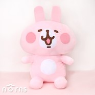

劉下來 Angel Liu
Professional Skills
- Fashion Illustration
- Trend Forecasting
- Textile Design
- Technical Design
- Draping/Ruching
- Flat Pattern Making
- Construction
Educational Training
San Dias School of Design
Bachelor of Arts in Fashion Design
- Attended from Aug. 2007 to May 2011
- Graduated magna cum laude with GPA of 3.750
- Best Knitwear Collection, San Dias Student Fashion Show 2010
Curtin High School
Diploma with Academic Distinction
- Attended from Aug. 2003 to May 2007
- Graduated cum laude with GPA of 3.5
- President, Curtin High Art Club
- Awardee, Excellence in Arts & Design
Work Experience
Senior Fashion Designer 23 BAKS Clothing Co. Sept. 2019 to present
- Develops and executes designs in line with brand identity and business strategy
- Collaborates with various teams throughout the design process